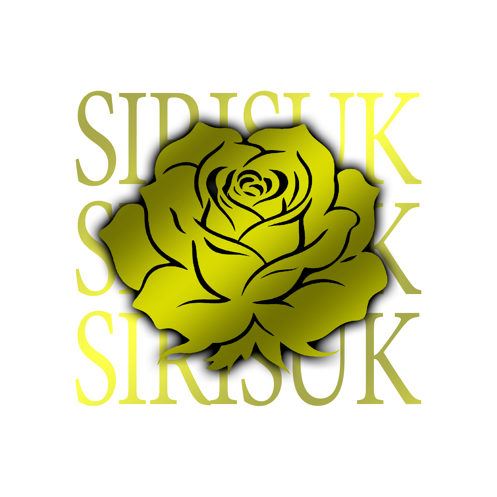

ประวัติความเป็นมา
จุดกำเนิดและเรื่องราวการเดินทางของพวกเรา SIRISUK GANG
จุดเริ่มต้นที่ METRO TOWN 1.0
Sirisuk เกิดครั้งแรกที่ METRO TOWN 1.0 ซึ่งสร้างขึ้นโดย Babe Paisangkom และเพื่อนๆ ในเวลานั้น
โดยสีแรกที่ถูกเลือกใช้งานและเป็นสัญลักษณ์เริ่มต้นก็คือ สีดำ ซึ่งสะท้อนถึงความแข็งแกร่งและเอกลักษณ์ของพวกเราตั้งแต่จุดเริ่มต้น